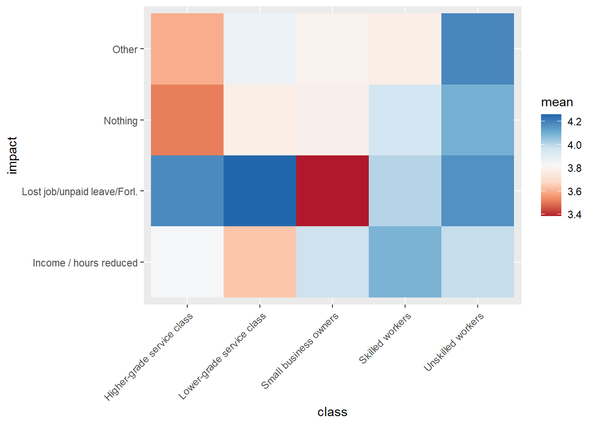

4 Covid19
As shown in Figure 2.1, the ESS data indicates a slightly higher average support for redistribution after the 2008 economic crisis and after the 2022 Covid19 pandemic. Evidence from a survey experiment in the USA show that participants are more willing to prioritize society’s problems when exposed to issues related to the pandemic (Cappelen et al. 2021). Van Hootegem and Laenen (2023) show that the increase in support for a universal basic income increased with the pandemic but it was short lived.
In this section we explore further the potential impact of the pandemic on support for redistribution.
4.1 Time series
Table 2.2 suggests that both social class and feeling about household income are significant predictors of support for redistribution. Figure 4.1 shows that the difference between subjective income groups remains stable over time, with all groups responding similar to 2008 crisis and the pandemic.
Conversely, the Figure 4.2 suggests that there is a slightly different pattern in response to the pandemic. There is a trajectory of increasing support for redistribution across skilled and unskilled workers since round 8 (2016). However, for lower-grade service class and small business owners, there seems to be a break in this trajectory captured in the latest wave.
4.2 Job loss
